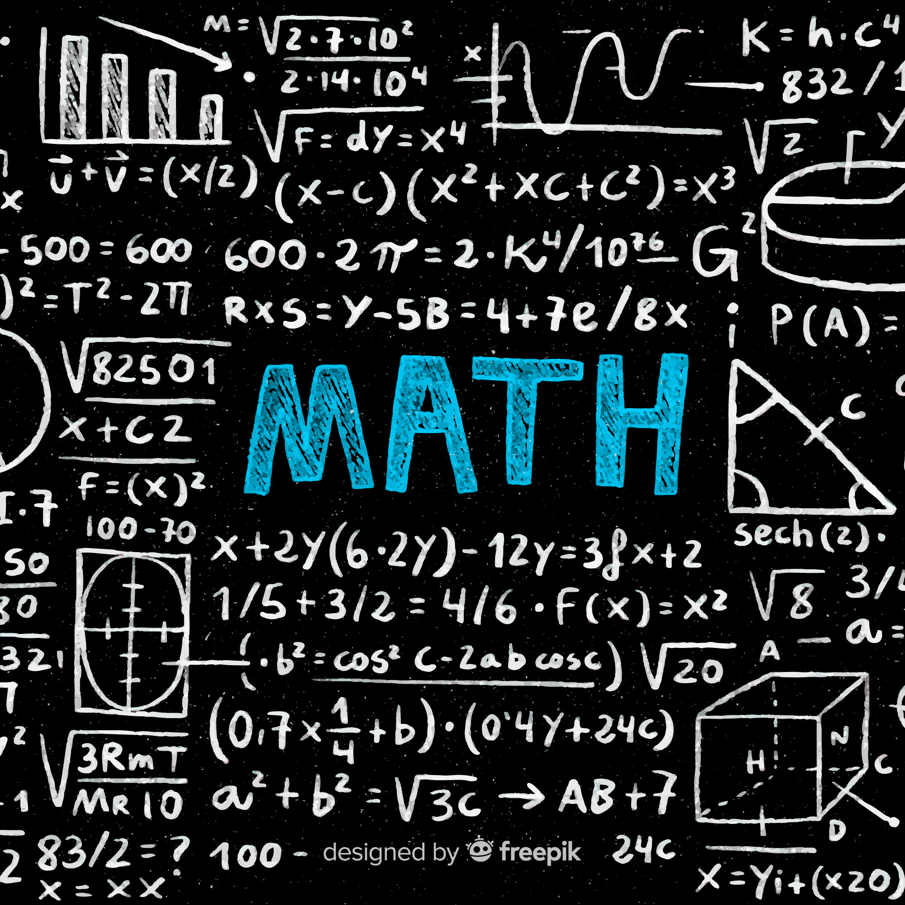

Diszkrét Matematika GEMAN112-B
Fedezd fel a diszkrét matematika varázslatos világát, ahol a logika és strukturált gondolkodás segítségével megismerheted az algoritmusok,
gráfok és kombinatorikus problémák mélyebb összefüggéseit, miközben fejleszted az absztrakt gondolkodásod és matematikai készségeidet.
Tematika
- Halmazok és műveletek, a Descartes szorzat, relációk és függvények
- Relációk: részben rendezés és ekvivalencia
- Kombinatorikai alap fogalmak. Newton binomiális tétele
- Permutációk: ciklusok, típus, szorzás, konjugálás, paritás
- Komplex számok: műveletek, gyökök, maradékos osztás
- Egyváltozós polinomok: műveletek, gyökök, maradékos osztás
- Polinomok legnagyobb közös osztója, euklédeszi algoritmus
- Polinomok irreducibilis tényezőkre való felbontása, a Schönemaan-Eizenstein kritérium, Gauss lemma
- Az algebra alaptétele és következményei
- Többváltozós polinomok, a szimmetrikus polinomok alaptétele